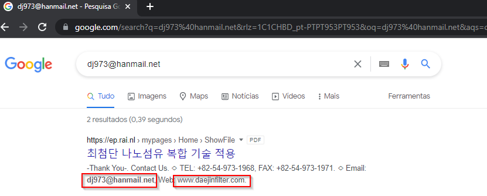
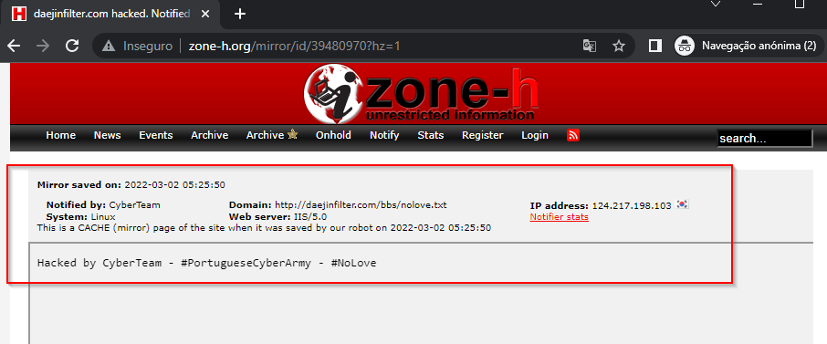
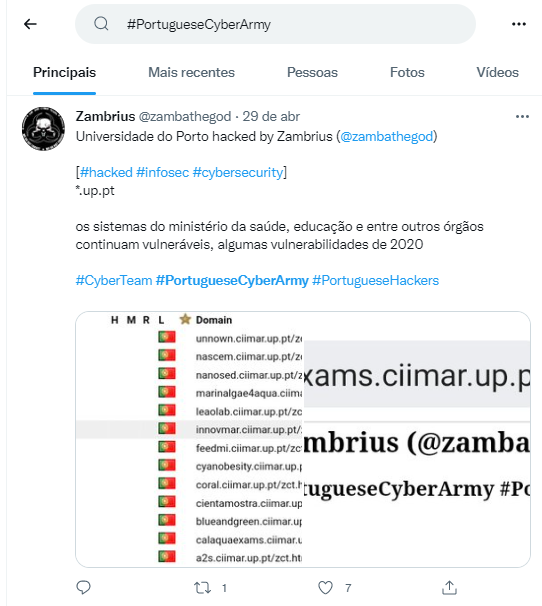
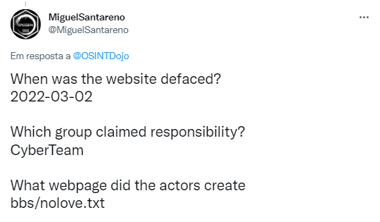

OSINT Dojo - OSINT challenge week 05/02/2021 - Defacement
The challenge is the following:

Methodology:
Based on the picture above mentioned i seach for the email dj973@hanmail.net and found a results mentioning the website www.daejinfilter.com

Then a quick lookup on http://www.zone-h.org/ and found out the results http://www.zone-h.org/mirror/id/39480970

Searching for #PortugueseCyberArmy Query on twitter:

Cyberteam Leader new account:

Public mentioning of other defaces

Recent Defacements:

Past arrest:
Tomás Pedroso, better known as Zambrius among the international hacking community, founded the team of hackers called Cyberteam, which has existed since 2011 but became popular in 2019 and 2020, with attacks in Portugal and Brazil.
They became famous with DDOS attacks, targeting servers, Defacement of Websites, damaging Internet pages, and SQL-Injection, exploiting website vulnerabilities. He has now been sentenced to six years in prison for having committed 28 crimes of aggravated illegitimate access, misuse of data and computer damage within ten months.
The 21-year-old, who lives in Ericeira with his parents and maternal grandmother, was under house arrest between May and November 2020, and it was in this condition that he was arrested by the PJ in November of that year. It took place as part of a joint operation with the Brazilian federal police on suspicion of trespassing on the Superior Electoral Court (TSE) of Brazil, during the first round of municipal elections.
Zambrius had already been arrested in 2017, aged 16, and interned until the age of 18 in an Educational Center: the young man had been involved in an operation conducted by several hackers who had invaded State structures, such as the PJ and the Attorney General's Office.

Picture of zambrius:

Dox in pastebin:

Answers:
When was the website defaced?
2022-03-02
Which group claimed responsibility?
CyberTeam
What webpage did the actors create
bbs/nolove.txt

Quote of the day: Try Harder!